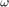
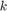
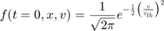
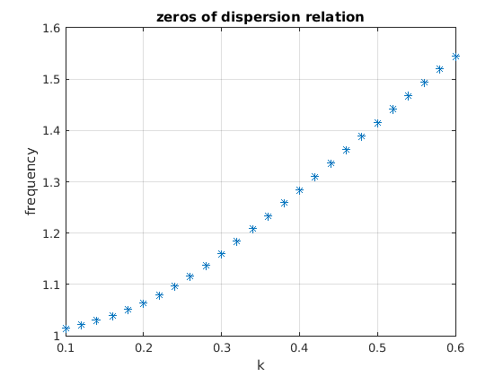
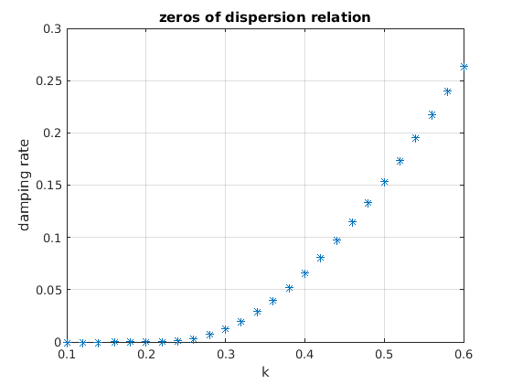

Contents
Dispersion relation for Landau Damping
Author: Jakob Ameres jakobameres.com
Use MATLABs symbolic toolbox, and define frequency , wave vector 
syms omega k x % Set the number of significant decimal digits % for variable-precision arithmetic digits(16); % Set up grid of wave vectors the dispersion relation should be solved for kgrid=linspace(0.1,0.6,25+1); numz=1; %Number of tries to find a zero
Plasma dispersion function Z(x)
The plasma dispersion function can be found in many textbooks
Z=symfun( sqrt(sym(pi))*exp(-x^2)*(1j-erfi(x)),x); % Define parameters vth=1; %Thermal velocity of electrons omegap=1; %Plasma frequency
Dispersion relation
Dispersion relation for a Langmuir wave with initial condition

D=symfun(1+ (omegap/vth/k)^2*(1+ omega/vth/sqrt(2)/k*... Z(omega/vth/sqrt(2)/k)), ... [omega,k]);
Find zeros
Use MATLABS internal variable precision arithmetic to solve for the zeroes of the dispersion relation for every k
OM=zeros(length(kgrid),numz); %contains omegas for idx=1:length(kgrid) for jdx=1:numz sol=[]; % repeated search for zero until a solution is found while(isempty(sol)) sol=vpasolve(D(omega,kgrid(idx))==0,'random',true); end OM(idx,jdx)=sol; end end
Visualize result
figure; plot(kgrid,abs(real(OM)),'*'); grid on; xlabel('k'); ylabel('frequency'); title('zeros of dispersion relation') figure; plot(kgrid,-imag(OM),'*'); grid on; xlabel('k'); ylabel('damping rate'); title('zeros of dispersion relation') 
Standard test case
Found the following zeros for the dispersion relation for the standard test case
disp(OM(kgrid==0.5,:).')
1.415661888604536 - 0.153359466909605i